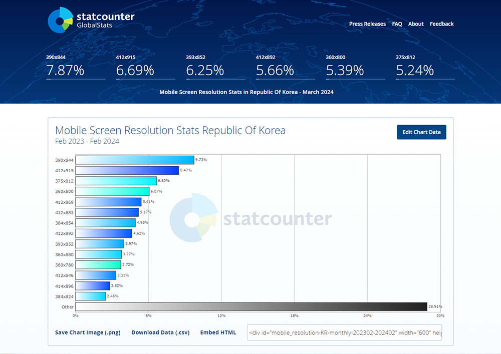

개요
목적
가이드라인은 시스템의 일관성을 유지하기 위한 최소한의 지침을 제공합니다. 시스템 화면을 구성하기 위한 규칙을 이해하고 가능한 가이드라인을 지켜 사용할 것을 권장합니다.
구성
본 가이드라인은 다음과 같이 구성되어 있습니다.
기본규칙
PC, Tablet, Mobile 환경에 적합한 표준 정보 구조와 정보구조에 따른 기본적인 정보를 설명합니다.
화면규칙
화면을 구성하고 있는 영역과 각 영역에 배치되는 요소및 배치 규칙에 대해 설명합니다.
활용 방법
서비스 및 시스템 개발 시 가이드 내의 그래픽 디자인 제작 규칙을 확인하고 활용해 주세요.
사용자에게 일관성 있는 사용성과 PC와 Mobile에 최적화된 UI를 제공할 수 있습니다.
적용 범위
Web 환경 기반의 PC, Tablet, Mobile의 시스템 및 서비스 대상의 가이드를 제공 합니다. 기본적으로 HTML 언어를 사용하는 UI를 대상으로 하며 이를 구성하기위한 CSS, Stylesheet, Html을 제공합니다.
적용 기준
PC 기준 해상도
본 가이드는 최적 해상도 1920*1080, 최소 해상도 1280*768 픽셀을 기준으로 제작 하였습니다.
* 출처 : statcounter Global Stats : Desktop Screen Resoluation Stats Republic of korea 2023~2024
2024년 상반기 기준으로 1920*1080 사용자가 51.2%로 가장 많으며, 높이 768 이상 사용자가 약 80% 정도를 차지하고 있습니다. 이에 따라 최적 해상도 1920*1080, 최소 해상도 1280*768을 기준으로 제공합니다.
모바일 기준 해상도
본 가이드는 반응형 UI를 고려하였으며 MObile의 기준해상도는 가로 420Pixel 이하 입니다.
* 출처 : statcounter Global Stats : Desktop & Tablet Browser Market Share Republic of korea 2023~2024
따라서 PC에서 420pixel 이하로 가로 사이즈를 줄이면 모바일에 맞는 UI로 변경 됩니다. 상세한 내용은 기본규칙을 참고 하세요.
Mobile의 최소 해상도는 가로 사이즈 360pixel을 기준으로 제공 합니다.
대상 브라우저
Microsoft Edge, Chrome, Safari Browser를 대상으로 합니다. Mobile 브라우저는 각 OS(Android, iOS)에서 제공하는 브라우저와 사용하는 디바이스에 따라 한정되므로 특정 브라우저를 대상으로 하지 않고 HTML, CSS를 사용해 화면을 구성하는 모든 화면을 대상으로 제공 합니다.
* 출처 : statcounter Global Stats : Desktop & Tablet Browser Market Share Republic of korea 2023~2024
2024년 상반기 기준으로 IE는 사용점유율이 없어, IE 브라우저는 대상에서 제외합니다.
적용 라이브러리
JQuery 라이브러리를 적용하여 layout template, Component 코드를 제공 합니다.
현재 가장인기있는 라이브러리이며 범용적입니다.(2024년 4월 현재 점유율 77%)
* 출처 : https://w3techs.com/technologies/history_overview/javascript_library/all/y2024년 4월 현재 기준